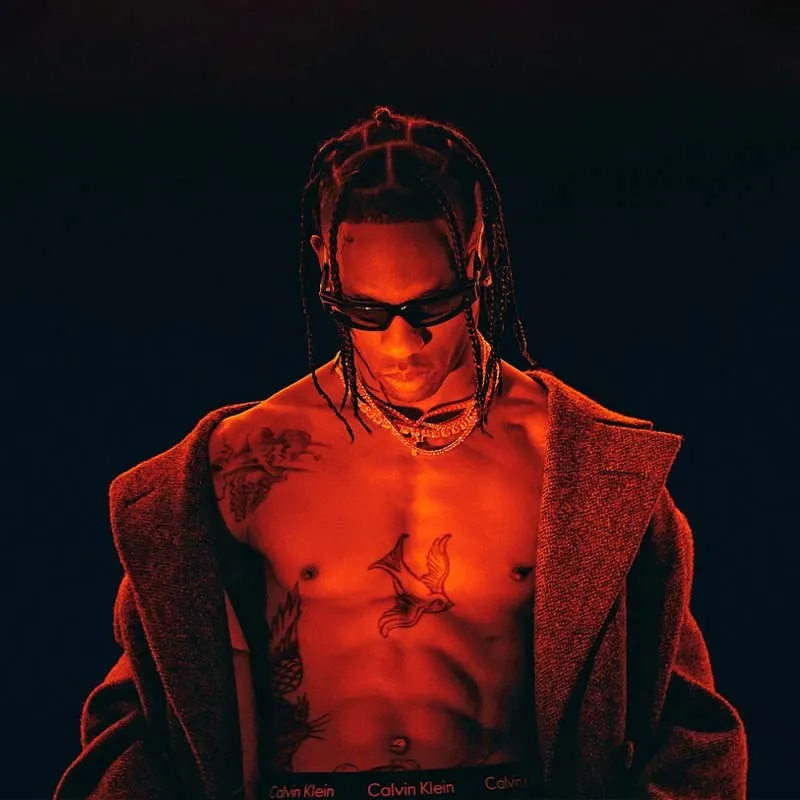
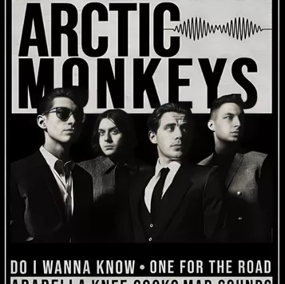
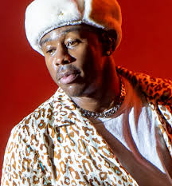
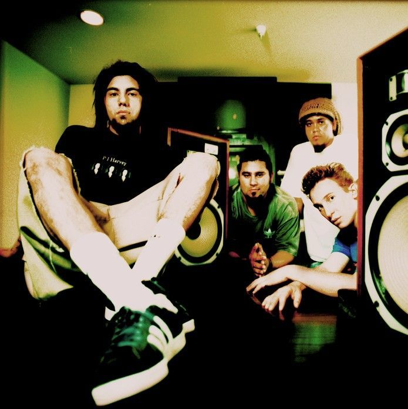

| FOTO | DESCRIPCION | CANCIONES FAVORITAS | |
|  | Travis Scott es un rapero, productor y diseñador estadounidense. Con un estilo que fusiona hip-hop, trap y psicodelia, se hizo famoso por su energía en vivo y producción innovadora. Álbumes como Astroworld (2018) y Utopia (2023) lo han consolidado como una de las figuras más influyentes del rap moderno. | 90210, MY EYES, Stargazing, lose | |
|  | Arctic Monkeys es una banda de rock británica formada en 2002 en Sheffield. Con un estilo que mezcla indie rock y garage rock, se hicieron famosos con su álbum debut Whatever People Say I Am, That's What I'm Not (2006). Liderados por Alex Turner, han evolucionado musicalmente y son una de las bandas más influyentes del género | 505, No Buses, Riot Van, Knee Socks | |
|  | Tyler, The Creator es un rapero, productor y diseñador estadounidense. Fundador de Odd Future, se hizo famoso por su estilo experimental y provocador. Con álbumes como IGOR (2019) y Call Me If You Get Lost (2021), ha evolucionado artísticamente, fusionando hip-hop, jazz y R&B, consolidándose como una figura clave en la música actual. | SMUCKERS, Potato Salad, BEST INTEREST, NEW MAGIC WAND | |
|  | Deftones es una banda de rock alternativo originaria de Sacramento, California, formada en 1988. Su estilo mezcla géneros como el metal alternativo, shoegaze, post-rock y nu metal, con una marcada atmósfera melancólica y emocional. Son conocidos por su sonido experimental y letras introspectivas. | Be Quiet and Drive (Far Away), Sextape, Cherry Waves |